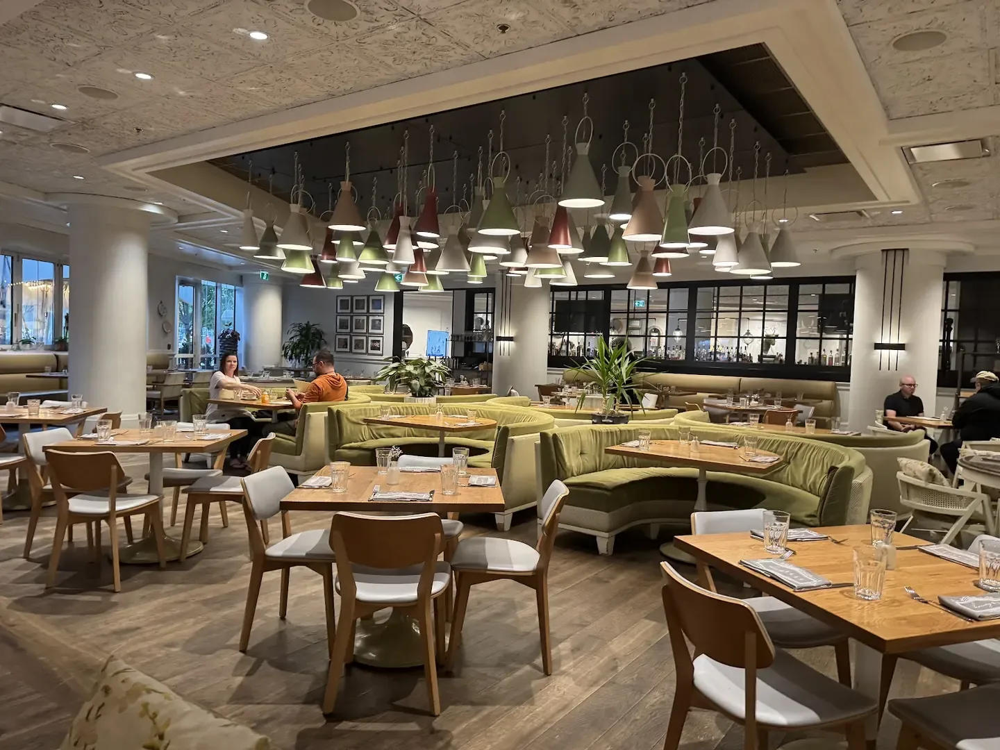
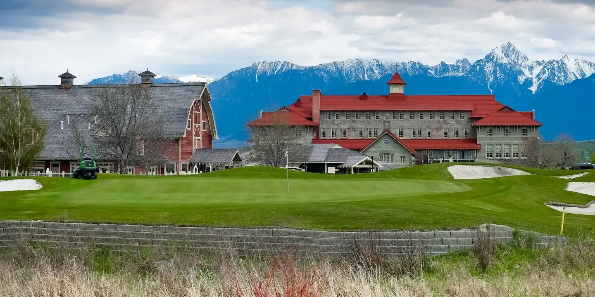
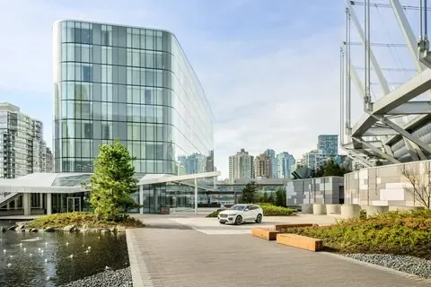
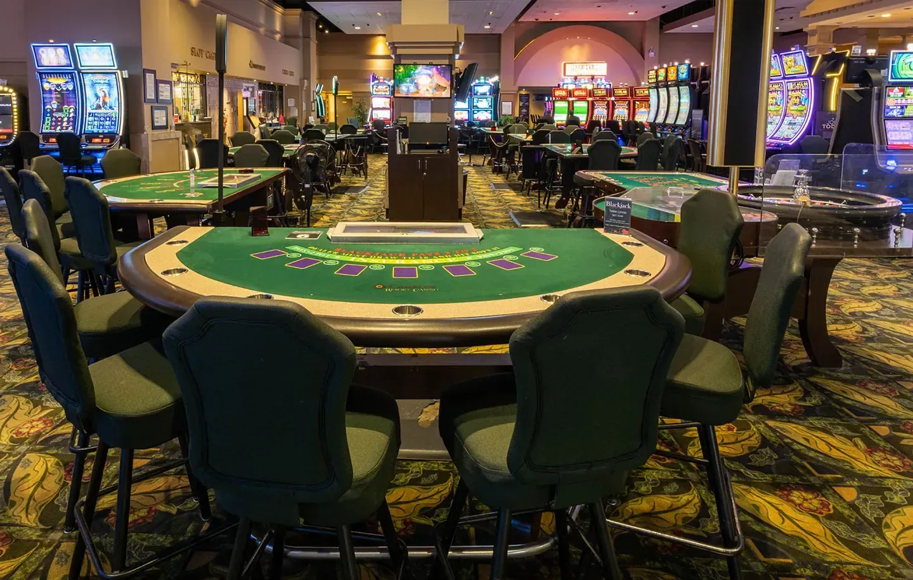
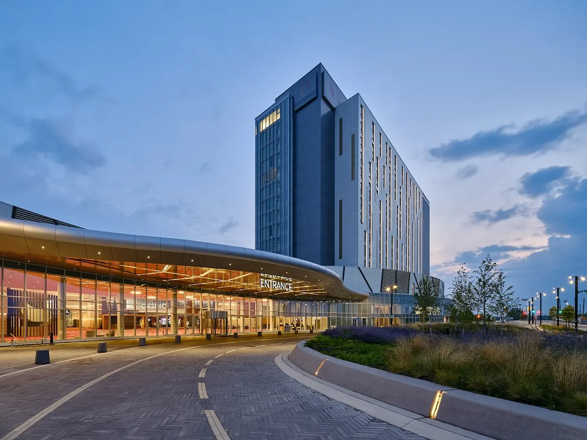
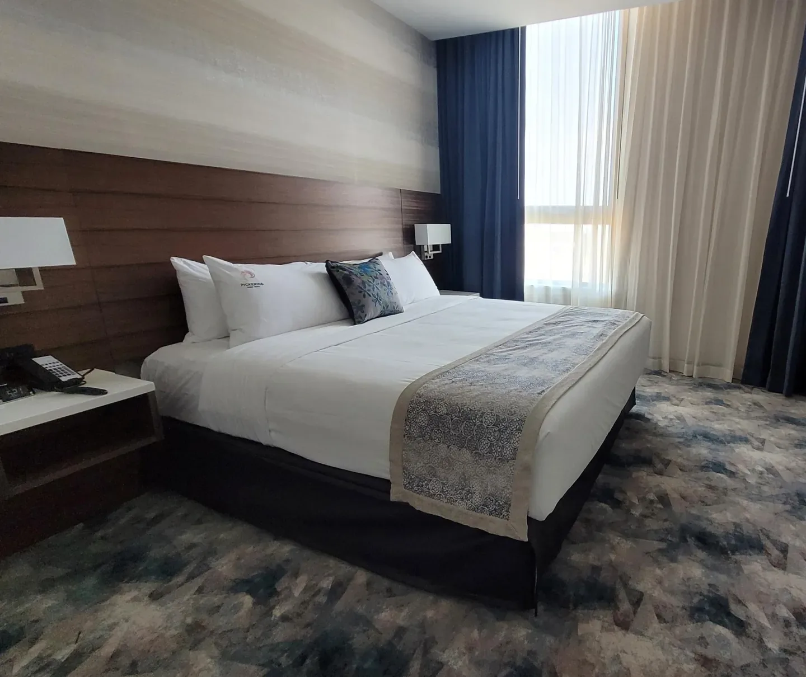
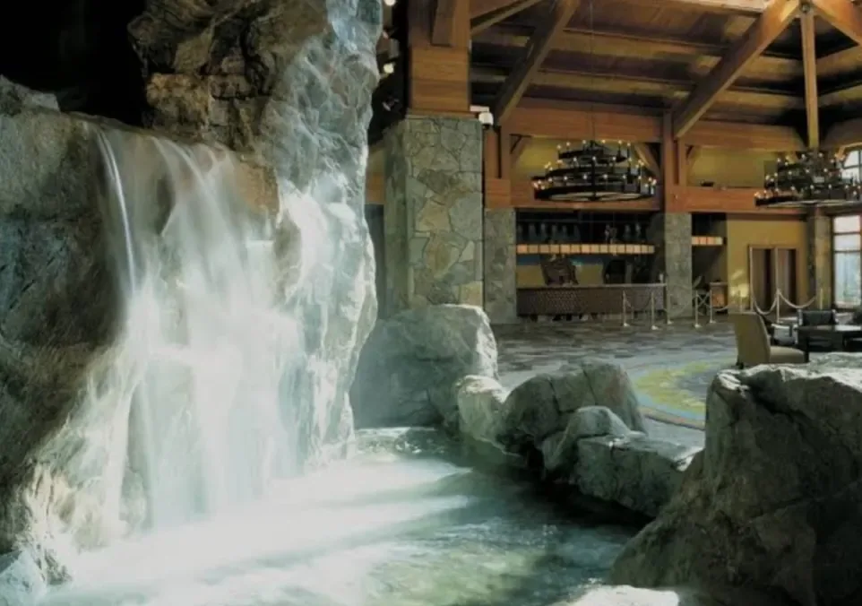

Six Canadian stays, read as whole places
Miami Casino looks at hotels and resorts as destinations in their own right — how you arrive, the rooms that hold the night, the tables that feed the day, and the landscape waiting beyond the doors. Age-restricted floors sit inside that wider picture as one amenity among many.
Quiet editorial notes. No booking. No rankings.

Six addresses across Canada
Each entry below is a place to stay first: the building, the setting, the rhythm of rooms and dining. Open a name to read how that stay is shaped.

St. Eugene Golf Resort & Casino
Cranbrook, British Columbia — a full resort beside a golf course, in a building with a past
Arrival opens onto fairways and open sky rather than a city street. Guest rooms sit inside a property that carries its own history in the fabric of the walls, with dining that serves the pace of a resort day. An age-restricted floor is one amenity among the wider grounds, fairways and overnight stay.
A stay here is shaped by the course at the door and the quiet of a building that has already lived other lives.

JW Marriott Parq Vancouver
Vancouver, British Columbia — a city-centre property in the middle of downtown
This is a city property first: arrival meets the density of downtown Vancouver outside the lobby. Guest rooms look into the urban grain; dining follows the hours of a centre-city stay. An age-restricted floor sits among the building’s other amenities rather than defining the whole address.
What shapes a night here is the city itself — close and continuously awake.

Camrose Casino
Camrose, Alberta — set out in open country on the prairie edge
The approach crosses open land before the building comes into view, a pause from denser Albertan centres. Rooms and dining serve travellers who want the prairie horizon close at hand. An age-restricted floor is present among the amenities; the wider stay is framed by country air and long sightlines.
A stay here takes its tone from the open country that surrounds the doors.

Pickering Casino Resort
Pickering, Ontario — a full resort setting within a city property
Pickering places a resort footprint inside a city address, so arrival feels both civic and expansive. Guest rooms and dining support longer stays as well as overnight stops, with the rhythm of a full resort campus. An age-restricted floor remains one amenity inside that broader layout of rooms, tables and grounds.
What shapes a stay here is the dual pull of city access and resort scale.

Casino New Brunswick
Moncton, New Brunswick — a full resort set out in open country
The property reads as a self-contained resort on open ground. Rooms and dining are arranged for guests who settle in for the length of a stay rather than a quick stop. An age-restricted floor appears among the amenities; the surrounding country and resort layout give the visit its larger shape.
A stay here is shaped by resort completeness against an open New Brunswick horizon.

Casino Rama
Rama, Ontario — a full resort in open country
Arrival opens onto a resort campus set in open country. Guest rooms and dining support the unhurried pace of a destination stay, with the wider grounds holding the day’s movement. An age-restricted floor is one amenity among that resort fabric of lodging, meals and landscape.
What shapes a night here is the resort’s own perimeter and the quiet of the surrounding land.
These six addresses stretch from British Columbia’s interior and Vancouver’s downtown core across Alberta prairie, Ontario’s open country and New Brunswick’s wider horizon. The region beyond each door is not a backdrop — it is part of how a stay feels when the room key is still in your pocket.
Reading the property beyond its best-known feature
A property’s most public amenity is rarely the whole story of a night spent there. The lobby sequence, the corridor light, the window’s view of fairway, prairie or tower glass — these decide the texture of the stay long before any single floor is opened.
Architecture and surroundings do the quiet work: a building with a past holds different silence than a new city tower; open country slows the evening differently than a downtown street. Dining follows that same grain — resort kitchens serve a longer day; city tables answer a denser clock.
Age-restricted floors, where they exist, belong in that inventory of amenities. They do not rewrite the address. Read the rooms, the tables and the land first; treat every floor as one choice inside a larger place to stay.
One room among many (18+)
Where these properties include an age-restricted floor, it sits beside guest rooms, dining and the grounds as one optional amenity. It is not the reason the building exists, and it is not the measure of a stay.
Access to those areas is for guests eighteen years and older. The rest of the property — arrival, overnight rooms, meals, the walk outside — remains the larger frame. This page describes that frame. It does not gate entry, confirm age or invite participation.
Read responsibly. Decide for yourself what belongs in your own visit, and leave aside what does not.
A calm way to read a stay
Begin with place: the province, the city or open country, the kind of building that holds the night. Then the rooms — how they meet the view — and the tables that feed the day. Only after that does any single amenity earn its mention.
Miami Casino holds these six Canadian addresses as editorial notes, not as a catalogue of offers. Nothing here asks you to reserve a room or open an account.
If a stay appeals, take the name and the region with you and look further on your own terms. If it does not, the page has still done its work: it has named the place clearly and left the decision alone.
That is the whole method — read quietly, leave quietly, and keep the wider hotel experience in view.